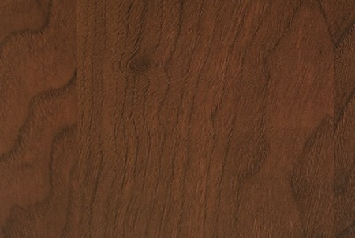
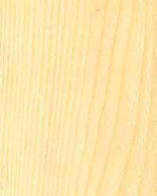
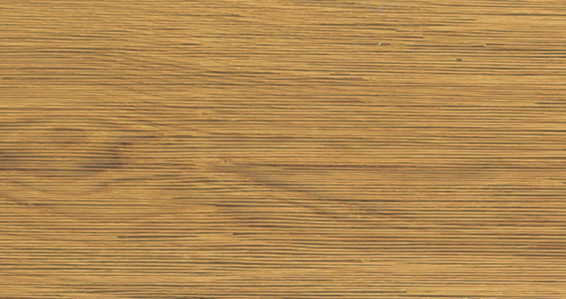
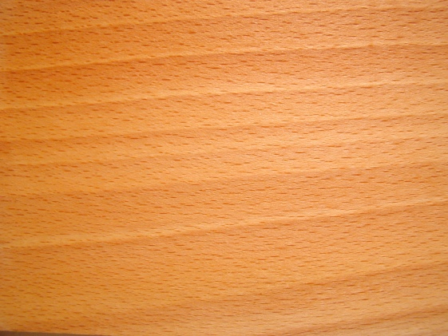
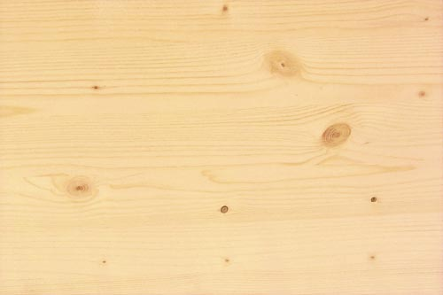

| Holzart | Härte | Bild |
|---|---|---|
| Nussholz | 9 |  |
| Tannenholz | 2 |  |
| Eichenholz | 7 |  |
| Buchenholz | 4 |  |
| Fichtenholz | 5 |  |
Das Holz wurde 4'000 vor Christi erfunden. Damals baute man seine Häuser noch aus Stroh und Steinen. Diese Bauweise awar jedoch sehr unstabil und es konnten auch einfach Tiere einbrechen. Das machte das leben in Häusern unsicher und man schlief lieber draussen. Bis eines Tages ein genialer Wissenschaftler einen Baume gnommen hat und diesen mit einem Brett aus Stein gekreuzt hat. Aus dieser Mischung kam dann ein Holzbrett heraus. Nun konnte man mit dieser neuen Ressource arbeiten und gigantische Wolkenkratzer bauen, welche jedoch auch unsicher waren, da es jederzeit hätte anfangen zu regnen und das Holz wäre dadurch wieder gewachsen.
Ich möchte an dieser Stelle noch anfügen, dass diese Seite ausschliesslich für Holzköpfe und ähnliche Halunken ist. Ausserdem kann ich nicht garantieren, dass Sie eine Holzvergiftung kriegen. Darum hier ein paar Witze:
Holz (von germanisch *holta, aus idg. *kl̩tˀo) bezeichnet im allgemeinen Sprachgebrauch das harte Gewebe der Sprossachsen (Stamm, Äste und Zweige) von Bäumen und Sträuchern. Botanisch wird Holz als das vom Kambium erzeugte sekundäre Xylem der Samenpflanzen definiert. Nach dieser Definition sind die holzigen Gewebe der Palmen und anderer höherer Pflanzen allerdings kein Holz im engeren Sinn. Kennzeichnend ist aber auch hier die Einlagerung von Lignin in die Zellwand. In einer weitergehenden Definition wird Holz daher auch als lignifiziertes (verholztes) pflanzliches Gewebe begriffen. Kulturhistorisch gesehen zählen Gehölze wohl zu den ältesten genutzten Pflanzen. Als vielseitiger, insbesondere aber nachwachsender Rohstoff ist Holz bis heute eines der wichtigsten Pflanzenprodukte als Rohstoff für die Weiterverarbeitung und auch ein regenerativer Energieträger. Gegenstände und Bauwerke aus Holz (z. B. Bögen und Schilde, Holzkohle, Grubenholz, Bahnschwellen, Holzboote, Pfahlbauten, Forts) sowie die Holzwirtschaft waren und sind ein Teil der menschlichen Zivilisation und Kulturgeschichte.[1] Die Abholzung von Wäldern an Küsten des Mittelmeers war einer der ersten großen Eingriffe des Menschen in ein Ökosystem. Rodungen waren der erste Schritt, um das zu großen Teilen bewaldete Europa urbar zu machen.